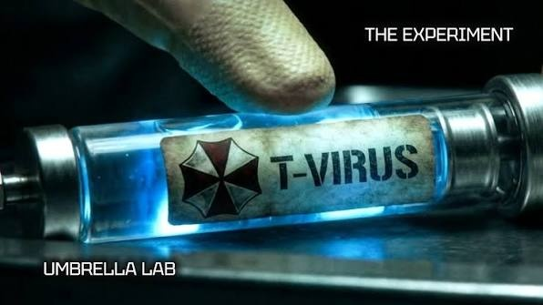
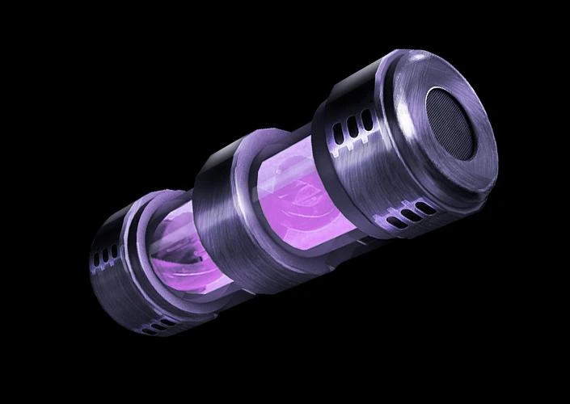
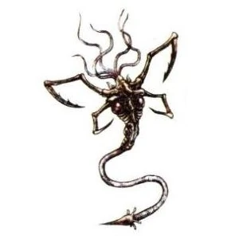
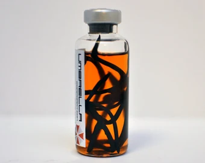

Arquivos de Patógenos e Mutações

Tyrant Virus (T-Vírus)
Desenvolvedores: Dr. James Marcus (criador) e William Birkin.
Data de Descoberta: 13 de Janeiro de 1978.
Jogos em que aparece: Resident Evil (1996), Resident Evil 2, Resident Evil 3: Nemesis, Resident Evil Outbreak.
Base Biológica: Vírus Progenitor combinado com DNA de sanguessugas.
Utilização: G-Virus e TG-Virus.
Variantes:
→ 2.1 – V-ACT : T-Virus + zumbi morto = Crimson Head.
*Observação: T-Virus + zumbi vivo = transforma-se em Licker.
Antígenos (Vacinas):
→ Vaccine: estava sendo pesquisado no Hospital de Raccoon.
→ Daylight (P-Base + V-Poison + T-Blood): pesquisado na Universidade de Raccoon. Mistura de uma base com veneno de abelha e sangue de uma criatura contaminada com o T-Virus.

Golgotha Virus (G-Vírus)
Desenvolvedor: William Birkin.
Data de Descoberta: 1988.
Jogos em que aparece: Resident Evil 2, Resident Evil: Operation Raccoon City, Resident Evil: Degeneration.
Base Biológica: T-Virus administrado em Lisa Trevor durante anos e suas constantes mutações, após absorção total do parasita Nemesis em seu organismo.
Utilização: TG-Virus e C-Virus.
Antígenos (Vacinas):
→ G-Vaccine (Codinome “DEVIL”): é necessária a base da vacina já pronta para concluir a sua criação; só tem efeito se o portador do vírus ainda não tiver sofrido metamorfose.

Parasita Las Plagas
Descobridor: Primeiro Castelão de uma vila remota na Espanha.
Data de Descoberta: Em meados do século 18, talvez.
Jogos em que aparece: Resident Evil 4.
Base Biológica: Fósseis encontrados durante tempos de escavações nas minas locais.
Utilização: Plagas Tipo-2 e Tipo-3.
Variantes:
→ 6.1 – Plaga Subordinada: Ovo de plaga comum injetada na corrente sanguínea do indivíduo, para que ecloda e tome o controle de seu sistema nervoso.
→ 6.2 – Plaga Controle: O indivíduo que a possui pode controlar os que possuem a Plaga Subordinada.
→ 6.3 – Plaga Tipo-2: Plaga madura injetada oralmente no indivíduo, leva menos tempo para tomar o sistema nervoso completamente.
→ 6.4 – Plaga Tipo-3: Combinação de plaga comum com gene da Plaga Controle.
Antígenos (Vacinas): A Plaga já adulta só pode ser removida a partir de um procedimento cirúrgico a laser.

Vírus Uroboros
Desenvolvedor: Albert Wesker, Tricell.
Data de Desenvolvimento: Provavelmente 2008.
Jogos em que aparece: Resident Evil 5, Resident Evil Revelations 2.
Base Biológica: Progenitor Virus combinado com anticorpos de T-Virus (retirados do corpo de Jill Valentine) para diminuição dos efeitos nocivos do Progenitor.
Utilização: Não serviu de base para outros vírus.
Antígenos (Vacinas): Não possui.

Chrysalid Virus (C-Vírus)
Desenvolvedora: Carla Radames.
Data de Descoberta: 2001.
Jogos em que aparece: Resident Evil 6.
Base Biológica: Vírus Progenitor combinado com T-Veronica, criando a variante T-02, que posteriormente foi combinada com o G-Virus, gerando assim o C-Virus.
Utilização: Não serviu de base para outros vírus.
Variantes:
→ 9.1 – C-Virus Aprimorado: C-Virus combinado com o sangue de Jake Muller, composto de poderosos anticorpos que eliminam o “estágio crisálida” do hospedeiro.
Antígenos (Vacinas):
→ Anti-C (ou C-Virus Vaccine): Criado a partir do sangue de Jake Muller. É efetiva somente se administrada em pessoas que ainda não foram infectadas com o C-Virus.

Mutamiceto Série E (O Mofo)
Desenvolvedores: Conexões (The Connections) e HCF (assistência técnica).
Data da Descoberta: 1919 (Leste Europeu); 2000 (início das pesquisas).
Jogos em que aparece: Resident Evil 7: Biohazard, Resident Evil Village (RE8).
Natureza do Mutamiceto: Substância in natura encontrada pela primeira vez, em seu estado natural, em uma caverna no Leste Europeu.
Utilização: “Mofados” (superorganismos tomados pelo mutamiceto) e seus derivados, Licanos e derivados (Leste Europeu, por Mãe Miranda).
Antígenos (Vacinas):
→ Soro: Desenvolvido a partir de células do nervo craniano e do nervo periférico de cobaia da série D; quando aplicado em infectados, provoca a calcificação dos micélios (pode ser fatal dependendo do estágio).
→ E-Necrotoxina: Forma “maximizada” do soro; combinada com amostras de células do indivíduo série E, provoca a calcificação fatal nos infectores (usada para o descarte de ativos como Eveline).

Antivírus Elpis
Desenvolvedores: Desconhecidos / Remanescentes Corporativos.
Data de Descoberta: Período de investigação pós-Raccoon City.
Jogos em que aparece: Resident Evil Requiem.
Base Biológica: Agente neutralizador sintetizado para combater patógenos avançados e reverter processos de mutação acelerada.
Utilização: Recurso crucial de cura e contenção biológica na jornada de Leon S. Kennedy e Grace Ashcroft.
Resumo de Ação: Atua diretamente na interrupção do ciclo mutativo. Diferente de vacinas comuns, ele é capaz de estabilizar o hospedeiro infetado, garantindo que suas funções cerebrais, traços de personalidade e comportamento originais permaneçam completamente intactos.